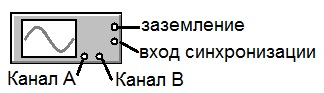
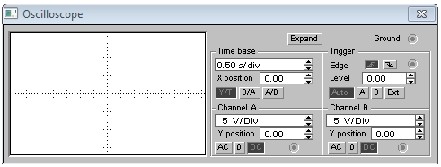
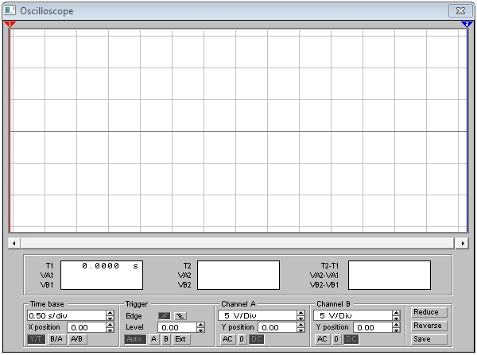

Electronics Workbench
Осциллограф в Electronics Workbench
Осциллограф – прибор, предназначенный для исследования амплитудных и временных параметров электрического сигнала и наглядно отображаемого на специальном экране. Экран имеет градуировку, благодаря которой можно не только увидеть форму изменяющегося напряжения, но и измерить его величину и длительность.
В Electronics Workbench используется двухканальный цифровой запоминающий осциллограф. Прибор имеет четыре вывода, подключение к которым выполняется на малом изображении осциллографа:
- верхний правый зажим – общий, заземление, как правило, именно относительно этого вывода отсчитывается напряжение на входных зажимах, поэтому подключение заземления необходимо для правильной работы осциллографа.
- нижний правый - вход синхронизации,
- нижние зажимы – входы каналов А (CHANNEL А) и В (CHANNEL В). Эти каналы работают независимо друг от друга, с раздельной регулировкой чувствительности в диапазоне от 10 мкВ/дел (mV/Div) до 5кВ/дел (kV/Div) и регулировкой смещения по вертикали (Y POS).

Рис. 1 - Малое изображение осциллографа
Двойным щелчком по уменьшенному изображению осциллографа открывается изображение простой модели осциллографа на которой можно установить
- расположение осей, по которым откладывается сигнал,
- нужный масштаб развертки по осям,
- смещение начала координат по осям,
- емкостной вход (кнопка АС) или потенциальный вход (кнопка DC) канала,
- режим синхронизации (внутренний или внешний).

Рис. 2 - Простоя модель осциллографа
Поле Trigger служит для определения момента начала развертки на экране осциллографа. Кнопки в строке Edge задают момент запуска осциллограммы по положительному или отрицательному фронту импульса на входе синхронизации. Поле Level позволяет задавать уровень при превышении которого запускается развертка.
Кнопки Auto, А, В, Ext задают режимы синхронизации:
- Auto - автоматический запуск развертки при включении схемы. Когда луч доходит до конца экрана, осциллограмма прописывается с начала экрана,
- А - запускающим является сигнал, поступающий на вход А,
- В - запускающим является сигнал, поступающий на вход В,
- Ext - Внешний запуск. В этом случае сигналом запуска является сигнал, подаваемый на вход синхронизации.
Нажатие кнопки EXPAND на простой модели осциллографа открывает расширенную модель осциллографа. В отличие от простой модели здесь имеются три информационных табло, на которых выводятся результаты измерений. Кроме этого, непосредственно под экраном находится линейка прокрутки, позволяющая наблюдать любой временной отрезок от момента включения до момента выключения схемы.

Рис. 3 - Расширенная модель осциллографа
На экране осциллографа расположены два курсора (красный и синий), обозначаемые 1 и 2, при помощи которых можно измерить мгновенные значения напряжений в любой точке осциллограммы. Для этого курсоры перетаскиваются мышью в требуемое положение (мышью захватывают треугольники в верхней части курсора).
Координаты точек пересечения первого курсора с осциллограммами отображаются на левом табло, координаты второго курсора на среднем табло. На правом табло отображаются значения разностей между соответствующими координатами первого и второго курсоров.
Кнопка Reduce обеспечивает переход к простой модели осциллографа.
Источники
studfile.net - Создание схемы радиоэлектронного устройства с помощью программы Electronics Workbench